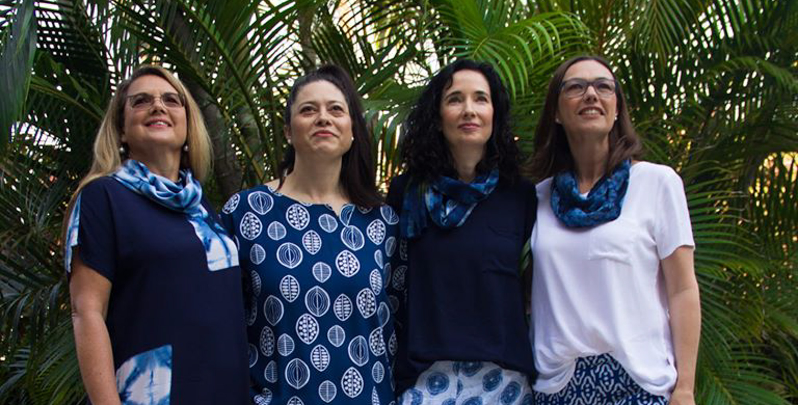

Website concepts
A fresh look for Nixz.
Pick an option to explore. Each one is a working preview built from the real Nixz collection, prices, photos and story, in the original teal and peach.

Option 1
Boutique editorial
Airy, photography-led and personal: a big category index, story-led sections, the full shop with quick view, gallery and contact pages.
View option 1


Option 2
Warm & editorial
A centred logo over a three-panel hero, a scrolling ticker, product carousels with quick view, soft serif headlines and shop-by-category tiles. One flowing page with the full collection, therapist range and visit details.
View option 2